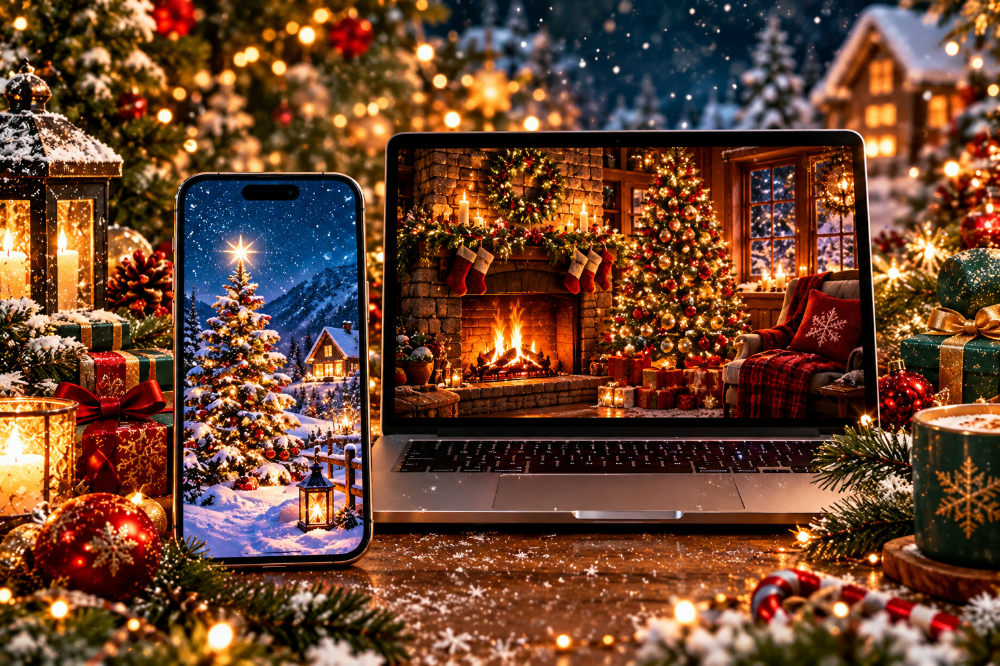

Christmas Wallpapers 2026: HD Festive Backgrounds
Published October 12, 2026 · Updated October 12, 2026 · By EventBuzz Team

Every December, screens turn festive. Christmas is the season when people most love to dress up their phones and computers — a snowy tree glowing on the lock screen, a crackling fireplace behind the desktop icons. But Christmas wallpapers have their own rules: what looks magical as a shared photo can look cluttered behind app icons, and a low-resolution image turns fuzzy on a modern display. This guide to Christmas wallpapers for 2026 covers the styles worth choosing, the exact sizes for phones and desktops, and step-by-step set-up instructions for iPhone, Android, Windows, and Mac. Note the distinction we keep throughout EventBuzz: wallpapers are backgrounds you set on your device; images are pictures you share with people — for those, see our Christmas Images 2026 collection.
What Makes a Great Christmas Wallpaper
A wallpaper lives underneath your clock, widgets, and icons, so it must cooperate with them. Check four things before committing:
- Dark zones for the clock: the best Christmas wallpapers keep the upper third dark — night sky, dark room, deep green — so the lock-screen time stays legible. A bright snow scene filling the whole frame is the most common Christmas wallpaper mistake.
- Warm glow, not whiteout: fairy lights, candles, and fireplace flames read as cozy; full-bright snowy fields strain the eyes and wash out white icon labels. If you love snow scenes, pick dusk or night versions.
- Simple composition: one tree, one fireplace, one snowy cabin — not a collage. Busy scenes fight with app grids; a single strong subject sits calmly behind them.
- True resolution: the file must be at least as large as your screen, or it upscales into softness. Blurry Christmas wallpapers are almost always too-small files, not bad designs.
Best Christmas Wallpaper Styles for 2026
Christmas wallpaper styles fall into clear families — choose yours before scrolling:
- Snowy Christmas trees: the classic. Look for trees photographed at dusk or night, with warm lights against deep blue snow — the contrast keeps the image readable behind icons. A single tree slightly off-center beats a centered one.
- Fireplaces and cozy interiors: crackling fires, stockings on mantels, cocoa on wooden tables. These are the warmest-feeling wallpapers and superb for desktops, where the horizontal mantel line sits naturally behind the taskbar.
- Snowy villages and cabins: lamplit cabins, snowy streets with string lights, church spires in falling snow. Storytelling wallpapers with natural dark skies — excellent for large monitors.
- Minimal gold-on-dark: a single gold tree outline, a small reindeer silhouette, or subtle snowflake patterns on black or deep green. Elegant, icon-friendly, and genuinely flattering on OLED screens.
- Christmas markets and streets: European market stalls, lit shopping streets, ice rinks at night. Depth and receding lights make these great desktop panoramas.
- Macro details: frost on pine needles, close-up ornaments, bokeh lights. Abstract enough to never fight icons — the safe choice when you cannot decide.
The winning pairing: a glowing tree or fireplace on the lock screen for the festive greeting, and a calm minimal or macro design on the home screen so your apps stay readable all December.
Phone Wallpaper Picks: Lock Screen vs Home Screen
The lock screen shows the time large near the top, so choose images with the brightest detail in the lower half — a tree rising from the bottom, fireplace flames low in the frame, lights clustered below a dark sky. The home screen carries your app grid, so go darker and simpler: a deep-green minimal tree outline, a dark bokeh-light texture, or a night-snow corner.
For resolution, target at least 1080×1920 in portrait, ideally 1440×3120 or larger — that covers virtually every 2026 phone. Never use a landscape photo as a phone wallpaper; the crop destroys the composition. Love a wide snowy village? Put it on your desktop, or crop to the single most glowing section for the phone.
Desktop and Laptop Wallpaper Picks
Desktops want horizontal scenes: a fireplace mantel stretching across the frame, a snowy village with dark sky at the edges for icon space, or a Christmas market receding into the distance. Standard targets: 1920×1080 (Full HD) for most laptops, 2560×1440 (QHD) for larger monitors, 3840×2160 (4K) for big displays. Setting a 1080p image on a 4K monitor is the classic fuzzy-wallpaper cause — match or exceed your panel’s resolution.
Multi-monitor users: panoramic snowy streets and continuous market rows stretch beautifully across two screens. Set the taskbar position before judging the crop, and keep the warmest glow slightly off-center so overlapping windows do not cover it.
How to Set a Christmas Wallpaper on Your Phone
On iPhone: save the image to Photos, then open Settings > Wallpaper > Add New Wallpaper > Photos. Pick the image, pinch to position the glow below the clock, and check the live preview — the time should sit on a dark patch of sky or shadow. Assign to lock screen, home screen, or both.
On Android: long-press the home screen > Wallpaper & style, choose the saved image, adjust the crop box, and apply to lock screen, home screen, or both. If the image is busy, enable the dim or blur option for the home screen so icons stay readable. After setting, lock and unlock once and re-crop if the clock overlaps the brightest lights.
How to Set It on a Windows PC or Mac
On Windows: right-click the desktop > Personalize > Background, browse to the saved image, and set the fit to Fill — never Stretch, which warps trees and mantels. For the full December effect, point a slideshow at a folder of Christmas wallpapers and rotate the coziness every few minutes.
On Mac: open System Settings > Wallpaper, add the photo, and choose Fill Screen. macOS handles high-DPI displays well as long as the source is 1920×1080 or larger (2560×1600 or larger on Retina MacBooks). A nice seasonal touch: a calm snowy-village desktop with a glowing fireplace phone lock screen makes your devices feel like a matched Christmas set.
Wallpaper Quality Tips: Avoid the Blurry Look
- Download the largest file offered: thumbnails are for choosing; full-size files are for setting. Always open the full image before saving.
- Crop, do not stretch: wrong shape for your screen? Crop to the glowing section or use Fill. Stretching distorts trees and ornaments visibly.
- Beware watermarks: free collections sometimes stamp logos across the center — inspect the full image first.
- Wallpapers are not images: a great shareable Christmas picture (bright, detailed, full-frame) often makes a terrible wallpaper. If you want both, download a dedicated wallpaper version — darker, simpler, correctly sized — rather than forcing a greeting-card image onto your screen. Our Christmas Images 2026 collection is built for sharing; this guide is built for screens.
- Set it in early December: changing the wallpaper as the decorations go up extends the festive feeling for the whole month; swap back in early January for a fresh start.
- Keep a seasonal folder: save each year’s favorites in one folder. Next December you will have a ready gallery instead of a fresh search.
A wallpaper is the room you live in all day. Choose the glow you want to see a hundred times daily — cozy for the lock screen, calm for the home screen.
Frequently Asked Questions
What size should a Christmas phone wallpaper be?
At least 1080×1920 pixels in portrait orientation; 1440×3120 or larger is ideal for modern phones. The file should match or exceed your screen resolution to stay crisp.
What is the difference between Christmas images and Christmas wallpapers?
Christmas images are pictures you share with friends and family, like greetings and photos. Wallpapers are background images sized and composed to sit on your phone or computer screen behind your icons and clock — darker, simpler, and correctly sized.
How do I set a Christmas wallpaper on iPhone?
Save the image to Photos, then go to Settings > Wallpaper > Add New Wallpaper > Photos, position it so the clock sits on a dark area, and assign it to the lock screen, home screen, or both.
How do I set a Christmas wallpaper on Android?
Long-press the home screen, choose Wallpaper & style, select the saved image, adjust the crop, and apply it to the lock screen, home screen, or both. Use dim or blur on the home screen if the image is busy.
Why does my wallpaper look blurry?
The most common cause is a source image smaller than your screen. Re-download the largest version available and use Fill rather than Stretch so nothing is distorted.
When is Christmas 2026?
Christmas Day 2026 is Friday, December 25. Set your Christmas wallpaper in early December so the festive look lasts the whole month.
Conclusion
A Christmas wallpaper is a small December ritual worth doing properly: pick a glowing style with a dark, calm area for your clock and icons, match the file to your screen size, and remember that wallpapers and shareable images are different jobs — this guide dresses your screens, while our Christmas Images 2026 collection handles the sharing. Set it as the decorations go up, and let the glow follow you everywhere until the new year.
More from EventBuzz:
Merry Christmas 2026 — may your screens glow as warmly as your fireplace!
Christmas Gift & Decor Picks
Thoughtful gifts and festive decorations for a magical Christmas 2026.


Prices shown at the time of publishing and can change. Links take you to AliExpress, where shipping and delivery details are shown.